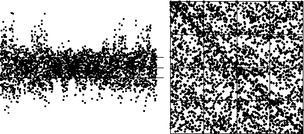

| This change of bin scales is essential to get a good comparison. |
| For example, here is the same cartoon data with the bin boundaries
B1 and B3 one-fifth of the maximum distance from
|
| The differences with the data are too numerous to mention. |
|  |
Return to Sample